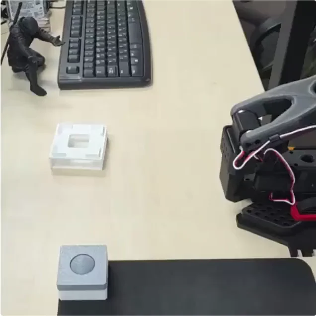
비전 기반 로봇팔 티칭·검사
달라지는 지그 위치에 로봇팔 동작을 맞추고, Pi에서

달라지는 지그 위치에 로봇팔 동작을 맞추고, Pi에서
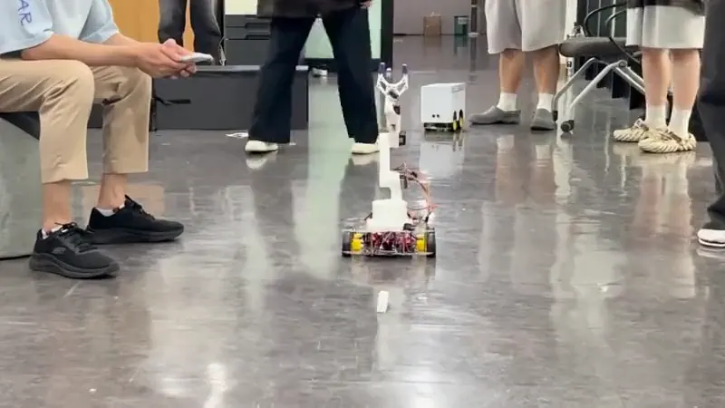
4륜 이동체에 로봇팔을 올려, 스마트폰으로 이동하며 물품을 집어 옮기는 로봇
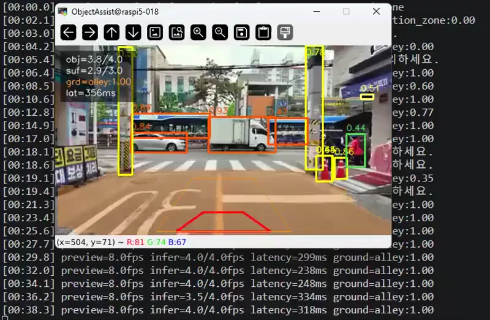
01비전 · 로봇팔2026.09–11 · 진행 중
달라지는 지그 위치에 동작을 맞추고, Raspberry Pi에서
도킹 위치가 달라져도 카메라로 지그를 다시 측정해 저장한 동작의 목표를 보정함
02작업 흐름
지그
판정
실물 지그 보정과 저장
03지그 위치 채택
AI로 초기 영역을 찾고 OpenCV로 추적함. 실제
완제품 하차용 받침대. 보이는 AI 마스크 경계에 설계 형상을 정합해 가려진 부분까지
여러 관측 간 일치 여부와 측정 시점을 확인하고 위치를 채택한 뒤 실행함
04목표 자세 보정
티칭 관절값과 TCP로 집게 자세 계산
지그
관절
모터 실측 각도로 목표 도착 확인
05티칭 GUI
고정 자세 또는 지그 기준 보정 자세를 선택해 작업 순서를 구성함
지그 위치 채택 상태와
06
A/B
설계
| 방식 | 부품 구분 | 평균 처리 |
|---|---|---|
| OpenCV | 247/249 | 0.937초 |
| AI 라벨 + CAD | 249/249 | 1.592초 |
처리 시간이 0.66초 늘었지만, 부품 구분 오류 2건을 없애 249개를 모두 정확히 구분
07운반용 지그 채택
채택 후 · 실행용 고정 전 허용 오차를 벗어나면
08팔레트
채택 후 · 실행용 고정 전 허용 오차를 벗어나면
| 찾는 방법 | 찾은 비율 |
|---|---|
| 외곽선 검출 | 79.3% |
| AI 인식 + 외곽선 | 80.7% |
| AI 인식 + 설계 형상 맞춤 | 99.6% |
09학습 데이터
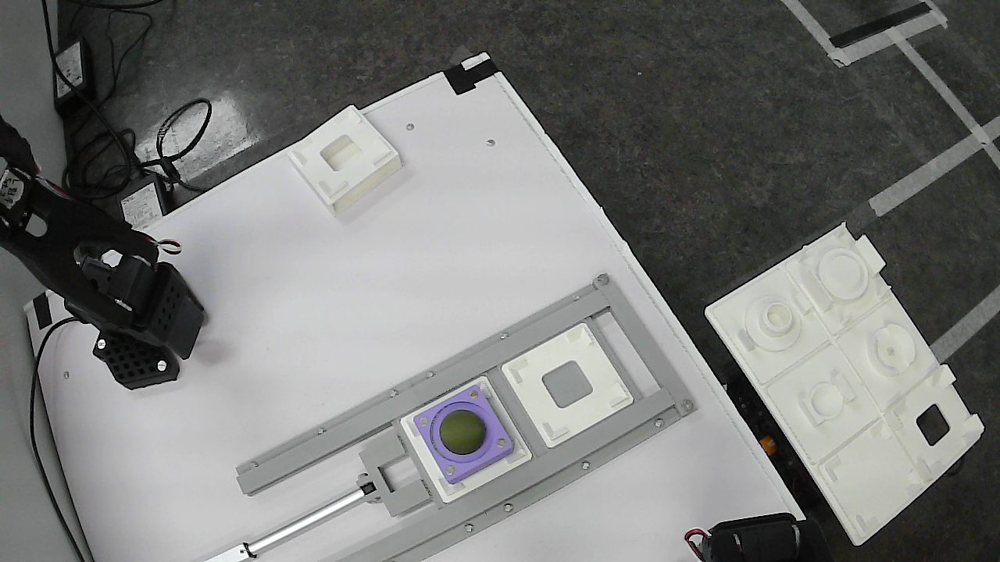

| 자료 | 학습 | 검증 | 실물 테스트 |
|---|---|---|---|
| 실물 사진 | 243장 | 30장 | 31장 |
| 혼합 학습 | 실물 243 + 가상 960장 | 실물 30 + 가상 120장 | 같은 실물 31장 |
10학습 방식 비교
| 마스크 mAP50–95 | 실물만 | 혼합 |
|---|---|---|
| 평균 | 94.77 | 94.76 |
| 최저 클래스 | 84.11 | 86.76 |
| 클래스 간 편차 | 5.08 | 4.34 |
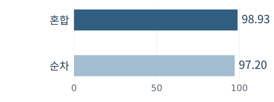
일부 클래스는 하락했지만, 낮았던 클래스의 성능을 보완함
전체 균형을 기준으로 혼합 학습을 선택함
11
혼합 학습 YOLO26s · 입력 960
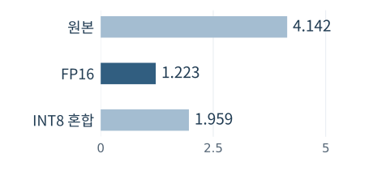
| 저장 형식 | 점수 |
|---|---|
| 원본 | 94.77 |
| FP16 | 94.76 |
| INT8 혼합 | 95.20 |
FP16: 마스크 성능을 유지하며
원본 대비 처리 시간 약 70% 감소 · INT8 혼합보다도 빠름
12Pi 모델 선택
같은 혼합 학습 절차 · 입력 960 · FP16
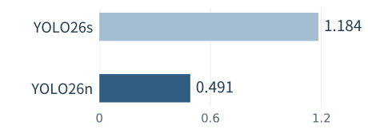
| 모델 | 마스크 mAP50–95 | 최대 메모리 |
|---|---|---|
| YOLO26s | 94.76 | 428.4MiB |
| YOLO26n | 95.79 | 272.7MiB |
이 비교에서 n은 약 2.29배 빠르고, 실물 마스크 성능도 낮아지지 않음
13작업 로그·오류 추적
| 시각 | 기록 |
|---|---|
| A 조립 작업 접수 | |
| 지그 위치·방향 확정 | |
| 중심 이탈 7.8mm · 안착 불합격 | |
| 판정 영상·오류 기록 저장 | |
| 에피소드 중단 |
실제 실행 로그에서 발췌

중심 이탈 7.8mm > 허용 5mm
부품은 있으나 제자리를 벗어나 검사 실패
실패 사유 확인 → FAILURE_IMAGES 경로 → 같은 실행의 판정 영상 조회
02이동 로봇 · 임베디드2026.07 · 1주GitHub 소스 코드 ↗
4륜 이동체와 로봇팔을 결합해 스마트폰으로 주행과 물품 회수 동작을 제어함
02시스템 구성
고정형 로봇팔의 작업 공간 한계를 이동체로 보완한 시제품
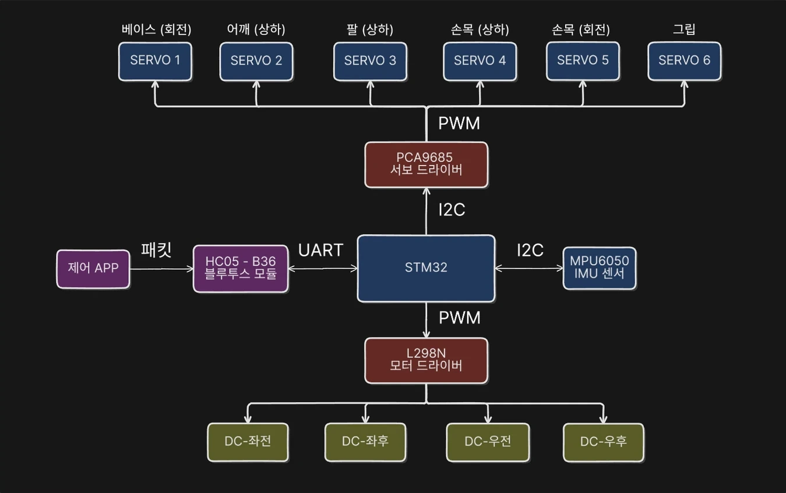
주행과 로봇팔 제어를 STM32 한 보드와 하나의 통신 규격으로 묶음
Flutter 앱, RC카 조립, 로봇팔 3D 프린팅
이동체와 로봇팔 결합,
PID 튜닝, 티칭 시퀀스, Flash 저장 확인
03하드웨어 구성
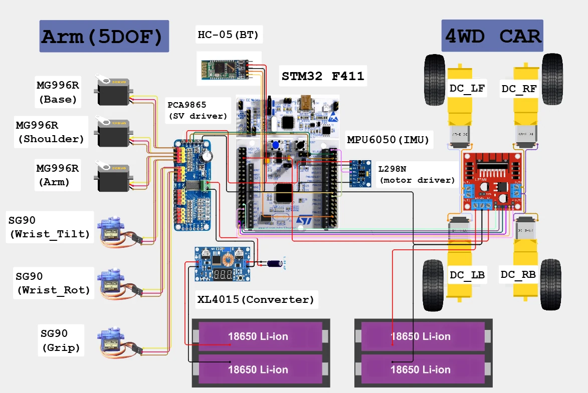
| 구분 | 부품 · 주요 사양 |
|---|---|
| 제어부 | STM32 NUCLEO-F411RECortex-M4 · 100MHz |
| 통신 | HC-05 블루투스UART 9600bps |
| 서보 드라이버 | PCA968516채널 PWM · I²C |
| 모터 드라이버 | L298N듀얼 H-브리지 |
| IMU | MPU60506축 · I²C |
| DC 기어드 모터 4개MG996R 4개 · SG90 2개 |
04통신 패킷
앱과 펌웨어가 같은 패킷을 쓰고, 모드에 따라 데이터 영역의 의미를 바꿈
| 모드 | 전달 내용 |
|---|---|
| Mode 0 | 차량 주행 · E-STOP · PID |
| Mode 1 | 6채널 로봇팔 · 속도 · Transaction ID |
| Mode 2 | 12개 티칭 시퀀스 조회 · 재생 · 저장 |
| Mode 3 | PID 계수 · 서보 3점 보정 · 설정 저장 |
05서보
어깨 관절 50°
50° → 1056µs
12비트 카운트 216
어깨 연결 2번 채널
50Hz로 서보 이동
STM32 타이머 채널을 아끼고, 6개 서보의 펄스폭을 채널별로 설정함
06S-curve 제어
목표 각도를 즉시 적용하면
5차 다항식으로 20ms마다 목표 각도를 계산하고 펄스폭으로 출력함
100% 최대 약 62.5°/s · 80% 약 50°/s · 50% 약 31.25°/s
07티칭 저장
전원이 꺼져도 유지되도록 프로그램과 분리된 Flash 영역 사용
부팅 시 Sector 7의
앱에서 바꾼 값은 RAM에서만 수정
저장 명령을 받으면 Sector 7에 일괄 기록
08
| 태스크 · 우선순위 | 주기 · 역할 |
|---|---|
| driveTaskHigh | 명령 즉시, 최대 20ms모터 출력 · PID · 500ms 통신 타임아웃 |
| bluetoothTaskAboveNormal | 5msDMA 수신 파싱 · 명령 큐 전달 |
| armTaskNormal | 명령 5ms · 서보 20msS-curve · PCA9685 · 티칭 · Flash |
| imuTaskBelowNormal | 20msMPU6050 측정 · 필터 · 상대 Yaw |
| statusTaskLow | 250ms |
09
| 문제 | 원인 | 개선 |
|---|---|---|
| 로봇팔 불안정 | 목표 각도를 즉시 적용해 펄스폭이 급변하고 | 서보 교체와 S-curve 제어 |
| 부하 시 떨림 |
| 커패시터 적용과 전원 배선 점검 |
03영상 인식 · 엣지 AI2026.05 · 11일GitHub 소스 코드 ↗
Raspberry Pi5에서 객체 탐지와 지면 분할 모델을 실행해 지면 종류와 보행 위험을 알림
02처리 구조
USB 카메라 영상을 인식 작업과 음성 안내 작업으로 나눠 처리함
주변 영상을 실시간으로 수집
객체
판단 결과를 음성으로 안내
03데이터와 모델
Raspberry Pi5 1대에서 모델 2개를 함께 돌리도록 라벨
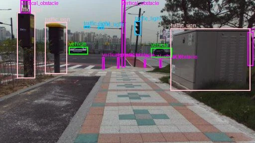
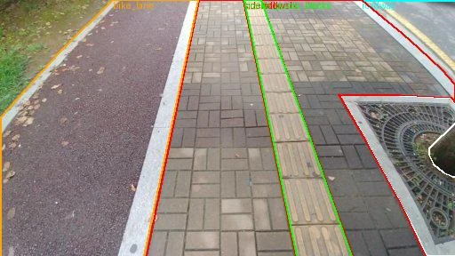
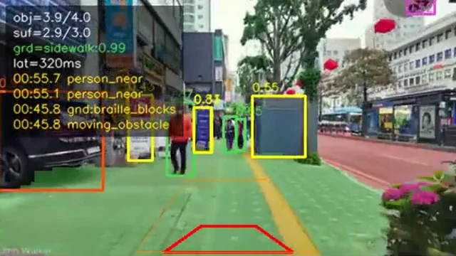
04입력 영상 처리
카메라 비율이 달라도 객체가 찌그러지지 않고, ROI가 늘 같은 좌표 기준으로 동작하게 함
다른 비율의 영상은 중앙을 잘라 16:9로 맞춤
이후 판단은 모두 이 프레임 기준
늘리지 않고 빈 영역을 채워 모델에 입력
채운 영역을 빼고 512×288 기준 좌표로 되돌림
실행 가능한 TFLite 런타임을 순서대로 찾아 사용함
Raspberry Pi5 테스트에서 가장 안정적이던 1스레드를 기본값으로 둠
05ROI 설정
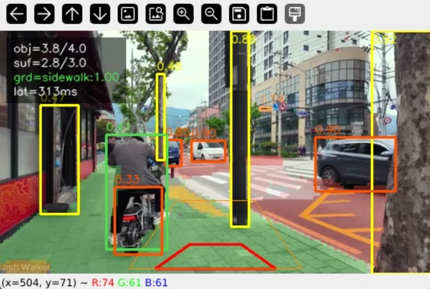
발 앞쪽에 해당하는 화면 하단 중앙에 배치함
옆에서 들어오는 차량을 먼저 잡도록 보행 ROI보다 넓게 잡음
06
| 대상 | 알림 조건 | 안내 음성 |
|---|---|---|
| 고정 장애물기둥, 임시 장애물, 벤치, 표지판, 정류장 |
| 앞에 장애물이 있습니다. 주의하세요. |
| 사람보행자, 이동 보조기구 |
| 앞에 사람이 가깝습니다. 천천히 이동하세요. |
기둥처럼 길게 잡힌 박스는 중심이 아닌 아랫변으로 판단해, 경로 밖 물체에 울리는 알림을 줄임
07차량 접근 판단
멈춰 있는 차량은 알리지 않고, 다가오거나 경로 쪽으로 들어오는 차량만 알림
이전 중심과 가까우면 같은 차량으로 보고 최근 1.5초 기록을 유지
차량 ROI 안에서 박스가 1.18배 이상 커지고 아랫변이 내려옴
차량 ROI 안에서 화면 중앙 쪽으로 가로 4% 이상 이동
차량이 가까워지고 있습니다. 주의하세요.
08알림 정리
| 구분 | 알림 |
|---|---|
| 객체 위험 | 차량 접근 · 고정 장애물 · 사람 근접 |
| 지면 위험 | 차도 진입 · 이면도로 진입 |
| 지면 안내 | 횡단보도 · 점자블록 |
09검증과 코드
녹화 영상과 INT8로 변환한
조정한
Raspberry Pi5 실행 코드의 TFLite 추론과
04산업 자동화 · PLC2026.06 · 3일
MPS 트레이너에서 소재 분류와 1–4층 창고
02목표와 장비
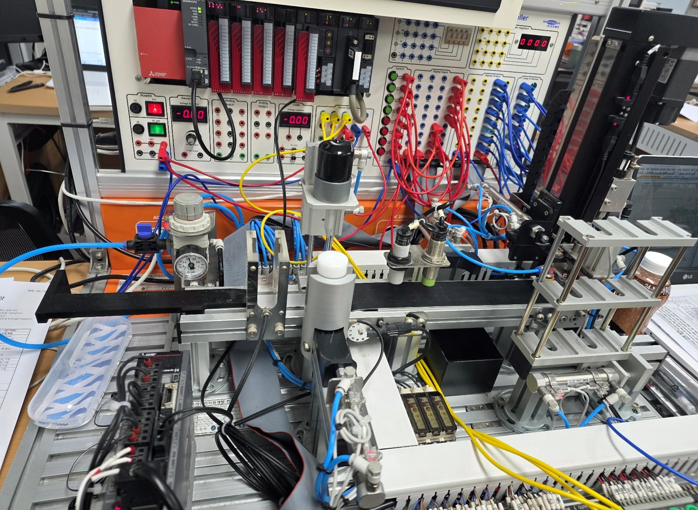
| 구분 | 구성 |
|---|---|
| 전원 모듈 | Q61P |
| CPU | Q03UDVCPU |
| 모션 제어 | QD77MS2 심플모션 카드 |
| 래더 프로그램 | GX Works2 |
| HMI 작화 | GT Designer3 |
03HMI 화면
각 설비를 수동 조작하거나 BSFL로 번갈아 점검하고, 축 정보로 서보 상태 확인
N번 위치의 설정값을 읽고 속도와 위치를 지정해 저장
04서보 위치와 자동 운전
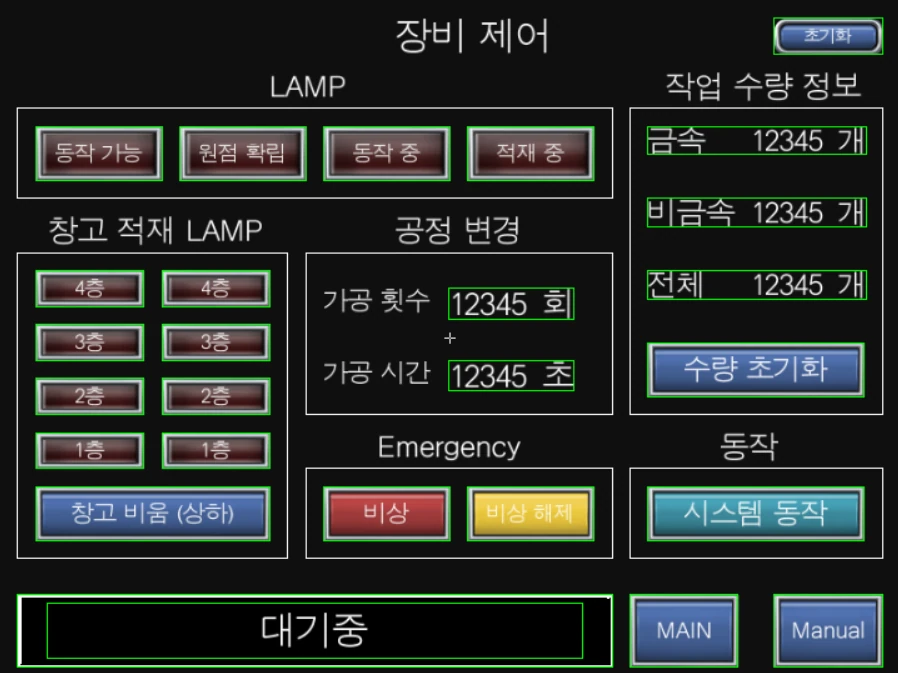
| 서보 위치 | 용도 |
|---|---|
| 1 · 2번 | 상승 · 하강 |
| 3번 | 벨트 위 흡착 위치 |
| 4 ~ 7번 | 1 ~ 4층 위치 |
05병렬 시퀀스
앞 소재를 저장하는 동안 다음 소재의
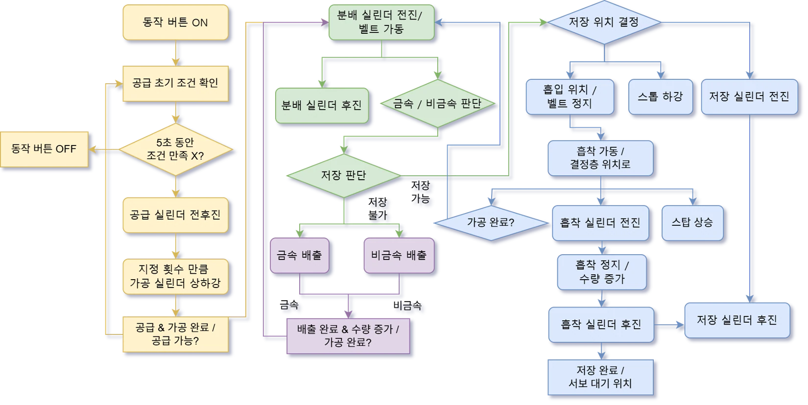
현재 적재 상태와 저장 예정 소재를 함께 보고 층을 판단
판단용 메모리와 실제 적재용 메모리를 따로 관리
시퀀스끼리 간섭 없이 진행되도록 조건 조정
06흐름별 동작
색은 구성도와 같음 ·
07수동 개별 제어
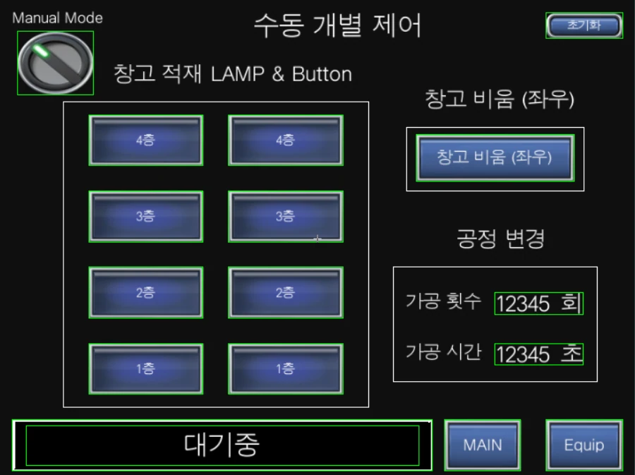
08통합과 문제 해결
| 문제 | 해결 |
|---|---|
| 병렬 시퀀스에서 이전 동작의 상태가 다음 판단에 영향을 줌 | 이전 동작과 이후 동작의 메모리를 따로 저장 |
| 여러 시퀀스 코드를 통합하며 | 작성 전에 번지를 정하고, 사용 중인 번지는 코멘트로 관리 |
배운 점:
05신호 처리 · 기계학습2023.05 · 졸업연구
피에조 센서 8개의 진동 신호로 노크 위치를 9개 구역으로 구분함
02연구 배경
저항막 · 적외선 · 정전용량 방식
진동 신호로 위치를 찾는 연구가 활발히 진행 중
| 선행 연구 | 사용 특징 | 진동 · 목적 |
|---|---|---|
| 진동 데이터 기반 고장 분류 | 시간 영역 통계적 특징 | 주기적 진동 · 고장 탐지 |
| 회전기기 진동 이상신호 분석 | 시간 · 주파수 영역 특성과 통계적 특징 | 주기적 진동 · 위치 탐지 |
| 바닥 진동 기반 낙상 검출 | 40–50Hz로 필터링한 주파수 범위 | 비주기적 진동 · 위치 탐지 |
| 기폭 위치별 주파수 분석 | 주파수 영역 특성 · 주주파수 | 비주기적 진동 · 위치 탐지 |
연구 목표: 시간 영역 · 주파수 영역 · 센서 간 시간 차 특징으로 노크 위치 탐지 정확도 비교
03실험 장치와 데이터
아크릴판에 피에조 센서 8개를 붙이고, DAQ로 진동 신호를 수집하고 MATLAB으로 데이터를 전처리 및 학습함
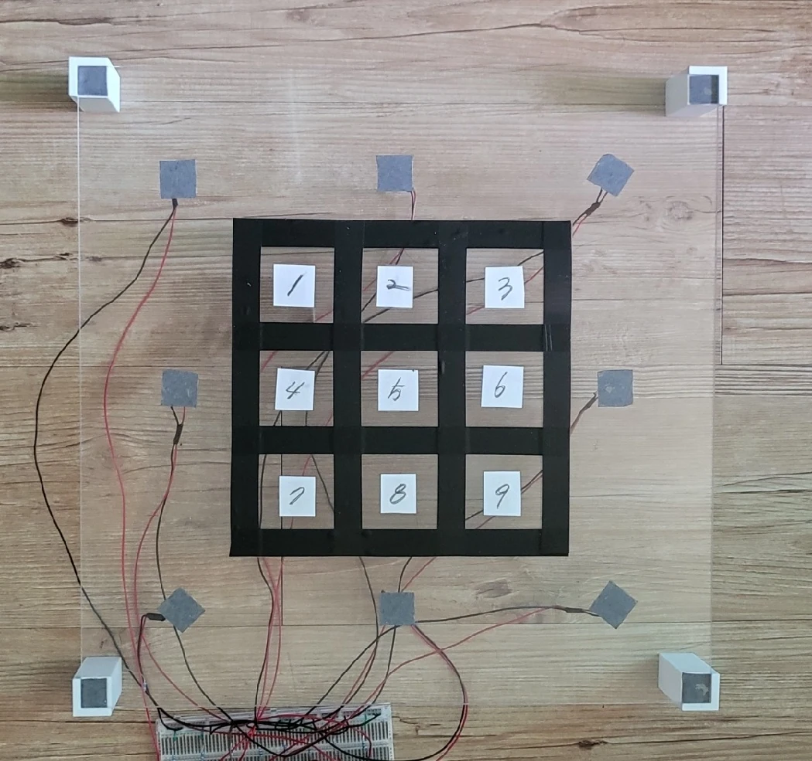
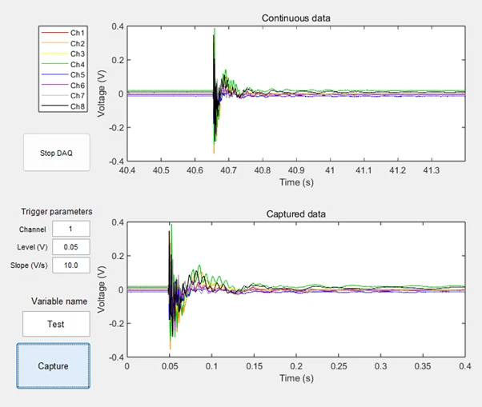
04위치 구분 원리
두드린 곳과 센서 사이의 거리가 달라, 같은 노크라도 센서마다 신호의
아크릴판의 9개 위치 중 한 곳을 두드림
센서 8개가 같은 진동을 각자 기록
센서마다 신호를 특징값으로 요약
학습한 모델이 9개 위치 중 하나를 고름
신호의 크기와 모양 · 피크값, 피크 시간, P2P, RMS
떨림의 빠르기 · 평균 주파수, 평균, 표준편차
진동이 각 센서에 도착한 순서와 간격
05전처리와 특징 추출
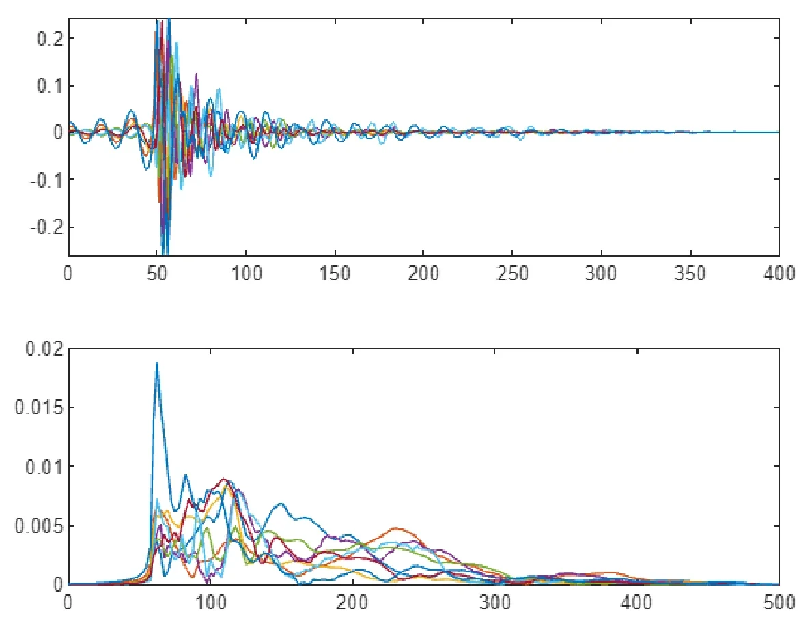
61Hz 하이패스 필터와 데이터 평탄화 적용
피크값 · 피크 시간 · 절댓값 평균 · RMS · 표준편차 · 왜도 · P2P · 첨도
평균 · 표준편차 · 왜도 · 첨도 · 파고율 · 평균 주파수
06변수 선정
각 변수의 p값을 비교해 영역별 상위 변수만 학습에 사용함
| 구분 | 선정 변수 | 개수 |
|---|---|---|
| 시간 영역 | 피크값 · 피크 시간 · P2P · RMS | 4개 |
| 주파수 영역 | 평균 주파수 · 평균 · 표준편차 | 3개 |
| 센서 간 시간 차 | 시간 차 데이터 | 1개 |
07모델별 정확도
| 입력 특징 | ANN | K-NN | SVM |
|---|---|---|---|
| 시간 영역 4개 | 94.180% | 96.296% | 97.619% |
| 주파수 영역 3개 | 96.561% | 97.884% | 98.413% |
| 센서 간 시간 차 1개 | 67.989% | 90.741% | 71.693% |
세 모델 모두 주파수 영역 특징이 가장 높고, 센서 간 시간 차만 쓰면
08K-NN 결과
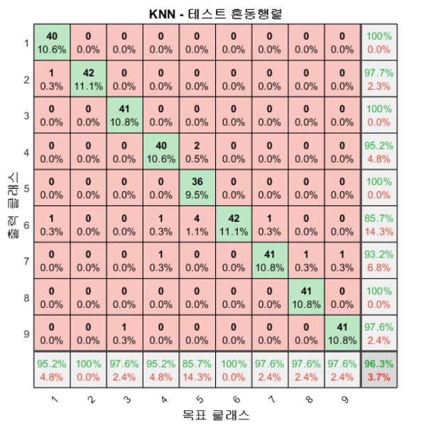
| K-NN 입력 특징 | 전체 | 5번 위치 |
|---|---|---|
| 센서 간 피크 시간 차 | 90.741% | 76.2% |
| 시간 영역 특징 | 96.296% | 85.7% |
| 주파수 영역 특징 | 97.884% | 92.9% |
같은 5번 위치에서도 시간 차보다
09결론
실시간 탐지로 정확도와 문제를 직접 확인
주제 제안, MATLAB
06웹앱개인 프로젝트GitHub 소스 코드 ↗
여행 사진과 Google Timeline 이동 기록을 연결해 경로와 장면을 함께 돌아봄
02경로 보기
Timeline 이동 기록을 지도 위 경로로 잇고, 재생 중 구간별 이동 수단과 시간을 표시함
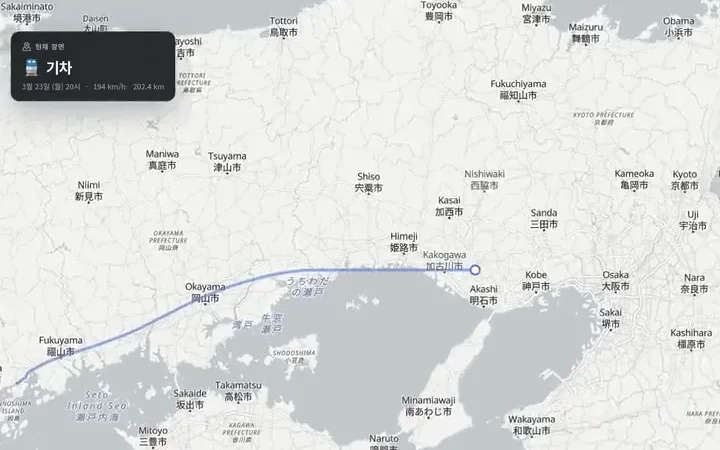
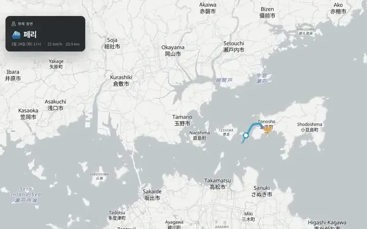
03사진 여정
경로 보기와 사진 여정은 각자의 재생 위치를 유지함
PC와 모바일 화면 크기에 맞춰 지도와 사진 배치를 바꿈
04여행 요약
여정을 불러올 때, 처음부터 볼 때, 마지막 여행 전체 화면에서 같은 요약을 보여 줌
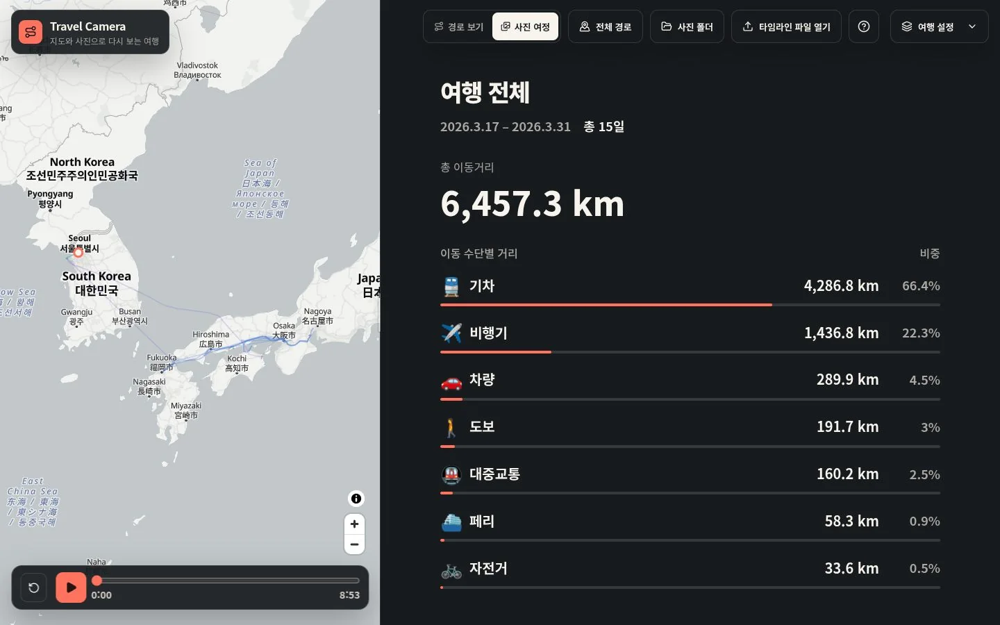
시작일 · 종료일과 총 일수
선택한 기간 전체의 이동거리
기차, 비행기, 차량, 도보, 대중교통, 페리, 자전거별 거리와 비중
05감상 설정
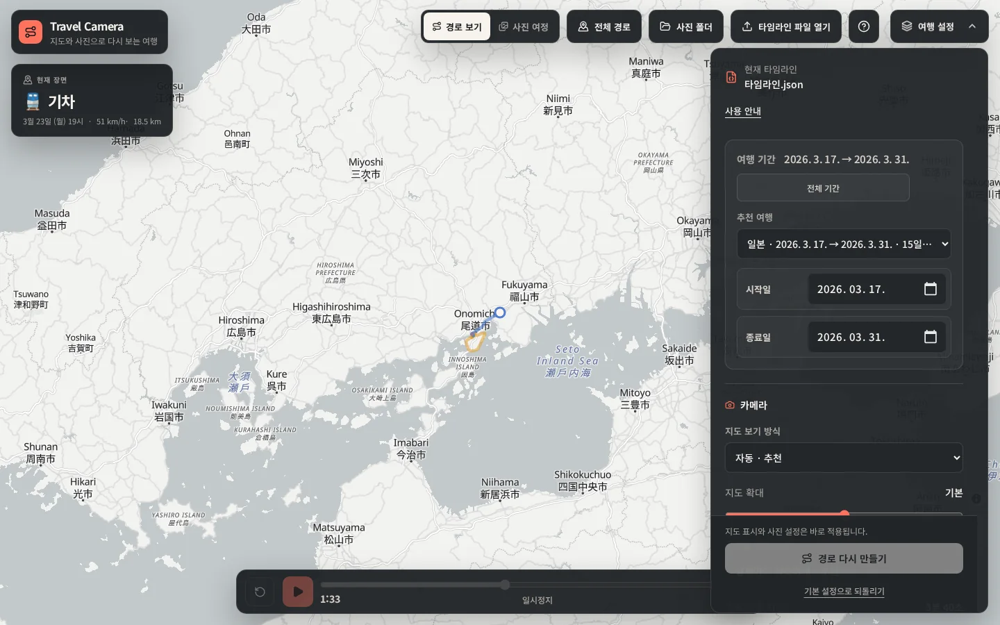
추천 여행을 고르거나
지도 확대, 따라가기, 재생 시간 조절
대표 사진만 또는 모든 사진, 사진마다 머무는 시간 조절
촬영 정보를 보고 이번 감상에서 뺄 사진 선택
06데이터 흐름
Timeline JSON과
촬영
모드별 재생 위치 유지, 화면 크기에 맞춘 배치
| 코드 영역 | 역할 |
|---|---|
| 파일 연결, 화면, 도움말, 감상 설정 | |
| 타임라인 분석, 기간 필터, 경로 계획, 이동 | |
| Player | 모드별 재생 세션, |
| 촬영 정보와 대표 장면, 지도 소스와 경로 표시 | |
| 로컬 서버 | 원본 파일 스트림, |
07지도 미리 불러오기
재생 중 카메라가 이동하거나
약 1.4초 뒤의 경로 위치와 확대 수준 계산
320ms 간격으로 동시에 2개, 한 번에 최대 36개를 낮은 우선순위로 요청
4초가 지나면 중단하고, 완료한 요청은 45초 동안 다시 받지 않음
응답을 늦춘 테스트 타일 서버에서 미리 받은 36개 타일을 추가 전송 없이 표시하는 것을 확인함
08개선과 검증
직접 여행 기록을 넣어 오류를 재현하고 수정 전후를 비교함
| 구분 | 개선 |
|---|---|
| 모드 전환과 재생 위치 | 모드 전환 시 재생 위치 유지 기준을 정하고 실제 기록으로 검증 |
| 불확실한 이동 기록 | 기록이 끊기거나 GPS와 위치가 크게 다르면 이동 |
| 원본 파일 처리 |